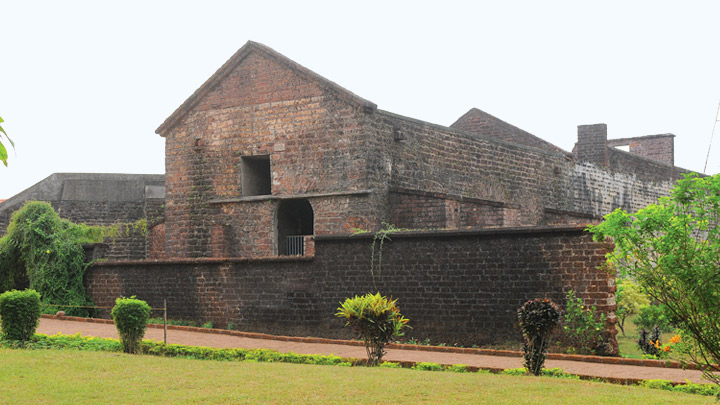
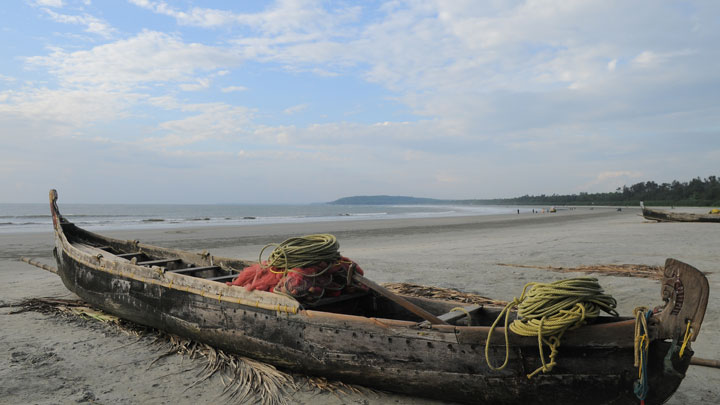
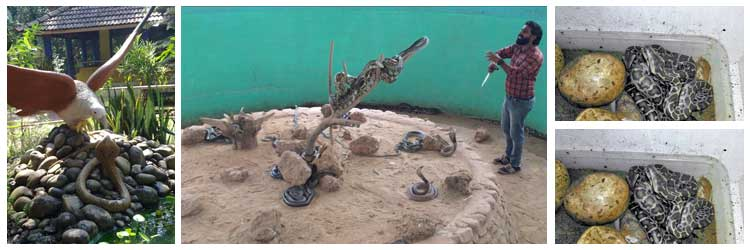
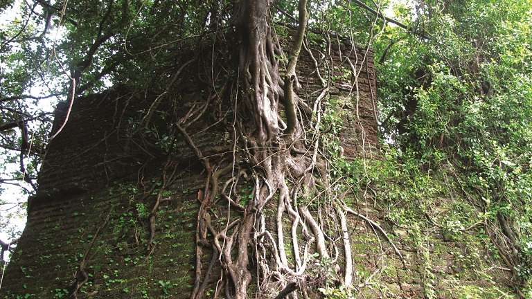

Top 5 places to visit in Kannur
St.Angelo Fort
Built by the first Portuguese Viceroy in India, Don Francesco de Almeida (1505), St. Angelo’s Fort is among the most historic sites in Kannur. This massive triangular laterite structure is flanked by gigantic bastions that make for an imposing sight. It changed hands between the Dutch and eventually the British, who would remodel and reequip it into their primary military stronghold in Malabar.
Mopilla Bay and Dharamadam Island are among the primary attractions here. Mopilla Bay is a natural harbour and the fort offers a wonderful view of it along with a sea wall projecting from the fort separating the rough sea and inland water. Dharamadam Island, barely 5 acres in area, is 100 m from the mainland and a favourite haunt of tourists. People come to the fort for relaxing strolls and just a brilliant view of the Arab

Muzhappilangad Beach
Muzhappilangad Beach is famous for being Kerala's only drive-in beach. At about 7km from Thalassery in Kannur, you have a 4 km stretch of sand that awaits you to simply drive along as you soak in the view of the beautiful Malabar Coast. Along the way, one gets to munch on delicacies from a number of shacks that offer authentic Malabar cuisine. It is often considered a swimmers paradise as the black rocks protect the beach from deep currents. This is a perfect way to relax and soak in this clean and well maintained beach. One can also partake in adventure sports like paragliding, parasailing and micro light flights along with water sports, power boating or a simple catamaran ride.

Parassinikkadavu Snake Park
The Parassinikkadavu Snake Park was established for the preservation and conservation of snakes in Kerala. The Park not only preserves snakes but also protect and foster numerous endangered reptiles, amphibians, mammals, marine creatures as well as rare avifauna - both migratory and endemic. It houses about 150 varied species of reptiles including both venomous and non-venomous snakes, monitor lizards, crocodiles, and many more. The main aim of establishing this park is to eliminate the superfluous superstitions about snakes thereby educating the people about them and creating the right awareness about these species. The Parassinikkadavu Snake Park is a real treat for the wildlife enthusiasts and animal lovers.

Payyambalam Beach
The Payyambalam Beach is an impeccably maintained destination in Kannur. This secluded location is known for providing one with the opportunity to simply relax or enjoy a family picnic in absolute tranquillity. Surfing and swimming options are also available for those who seek a little adventure. The gentle waters form a picturesque setting that has been featured in many South Indian movies as well. Being close to Kannur town has made it a favourite haunt for tourists and locals alike.

Ezhimala
Ezhimala (ezhu means seven and mala means mountain in Malayalam), is a seven-peaked mountain, about 55 kms from Kannur. The mountainous region, which stands at a height of about 286 m above sea level, is seven kilometres from Payyannur.The historically significant Ezhimala has an interesting past that dates back to the Sangha period. It was the headquarters of the Ezhimala kings and later, of the Mooshika kings. It witnessed the battles between Chola and Chera dynasties in the 11th century. At the foothills, there are relics of the distant past, such as burial chambers, carved stone pillars, caves and granite platforms.
The area was a centre for trade during ancient times, and frequented by Arab traders. It is also believed that Lord Buddha visited the place once.
